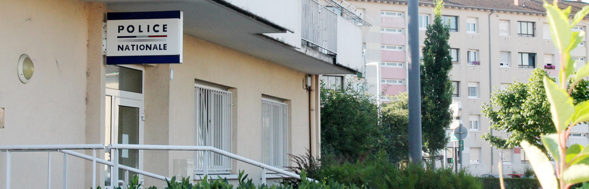

Opération Tranquillité vacances
En cas d’absence de votre domicile, vous pouvez demander à la police nationale de le surveiller au gré de ses patrouilles.
Pour s’inscrire, il faut télécharger le Formulaire de demande individuelle ou le chercher à l’accueil en mairie. Ce formulaire rempli est à adresser au Bureau de police à Hoenheim ou au commissariat à Schiltigheim (mairie).
Ceci n’exclut pas d’avoir les bons réflexes contre les cambriolages. Vous trouverez ci-après quelques conseils pour préserver votre domicile et les démarches en cas de cambriolages.
Sécurité et prévention
Police Nationale Hoenheim : +33 (0)3 69 73 88 30 – Rue du chêne – HOENHEIM
Horaires d’ouverture:
- lundi, mardi et jeudi de 8h à 12h et de 14h à 18h
- mercredi de 8h35 à 12h et 14h à 18h
- vendredi de 8h à 12h et de 14h à 17h30.
Accueil du public, plaintes et mains courantes.
- Commissariat central : +33 (0)3 90 23 17 17
Etat d’urgence et opération Vigipirate – Les bons réflexes
Suite aux attaques terroristes du 13 novembre, l’Etat a lancé une campagne de communication pour sensibiliser le public aux situations de danger. Son affiche « Réagir en cas d’attaque terroriste » rappelle les gestes et actions, en cas de fusillade de masse. La réaction de peur engendre en effet un état de prostration devant lequel il est vital de réagir.
De même, il est rappelé qu’en raison du plan Vigipirate, des contrôles sont effectués à l’entrée des écoles et des bâtiments accueillant du public. Il y va de la sécurité de tous et de chacun de se prêter à ces contrôles.